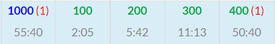
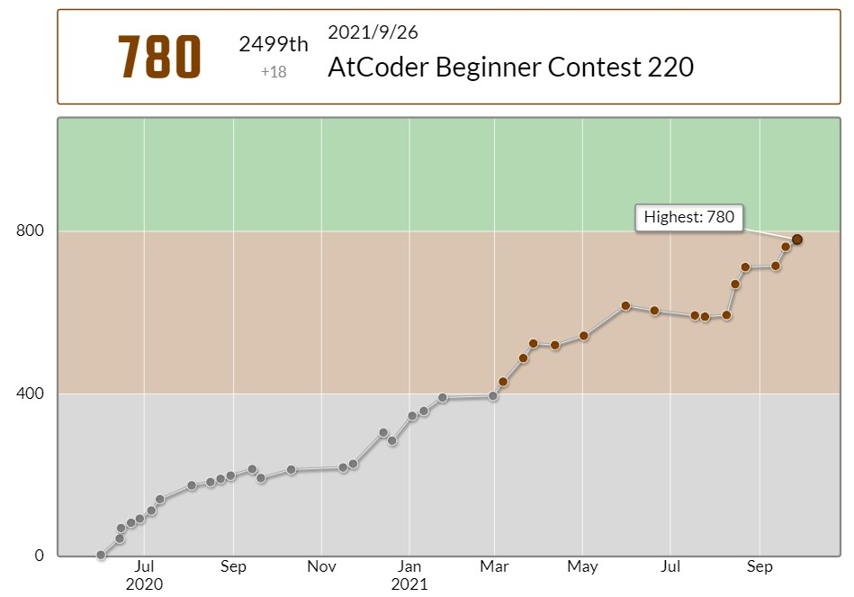
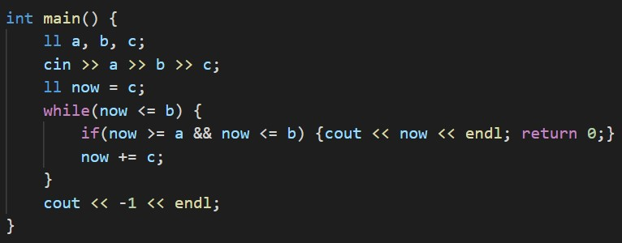
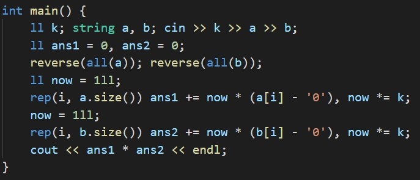
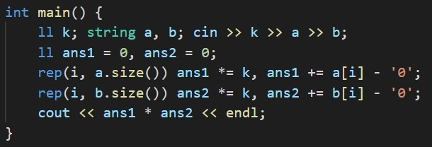
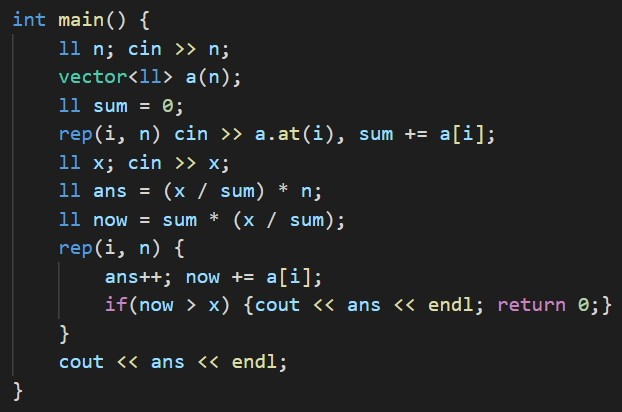
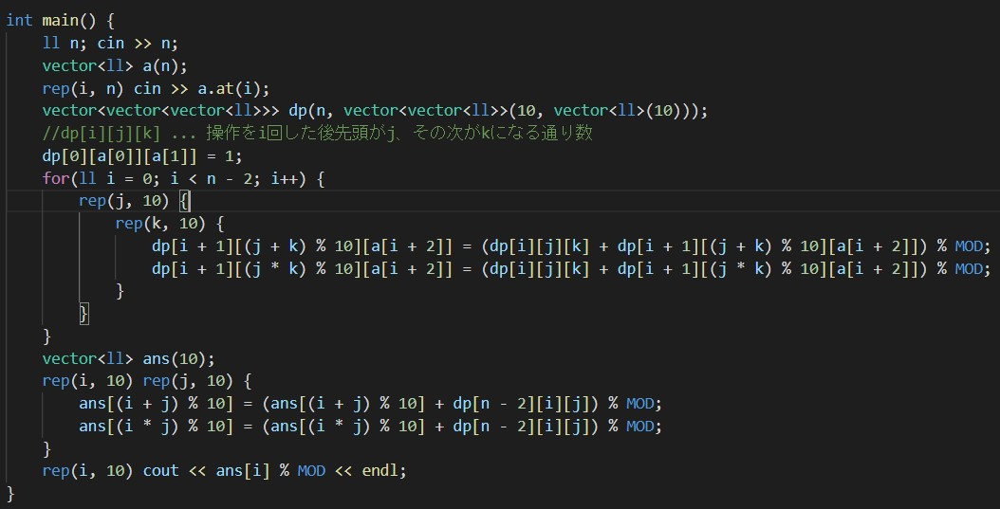
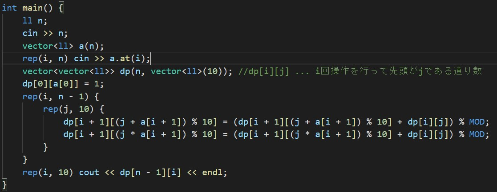

ABC220でした。もうちょいで緑だというのに今週もそんなに精進しませんでした。

結果は55分1ペナ4ACでした。前回に比べて安定して4完をとることができた気がします。
ただ今回はD問題のdiffが低かった(前回は緑、今回は茶)ので、レート自体はそこまで伸びなかったです。 正直D問題を解き終わった後、「これは緑いったやろ!!!」とウキウキしてました。
A - Find Multiple
いつものA問題より少し捻られていて驚きました。
僕は怖かったので一応Cの倍数をBより大きくなるまで見ていきましたが、(b / c) * c >= a でA以上B以下であるようなCの倍数があるかどうか判定できます。
B - Base K
K進数表記されている数のi桁目に書かれている数をjとすると、10進数ではk^(i - 1) * jとなるのでそれを愚直に実装しました。
これがコンテスト中に提出したコードですが、
このように上の桁から足していき、k進数上で1桁ずつ左にずらしていく(=k倍する)書き方の方がスマートに書けます。(数学で習う進数変換の方法をイメージすると理解できると思います。)
C - Long Sequence
10 ^ 100回は無限と考えればいいです。
Aの合計値をひとまとめにして考えると、答えは (X / sumA) * n + 不足分 となるのがわかります。
(X / sumA) * nの部分は計算すれば求まります。
あとは今までの合計値(sumA * (x / sumA))に数列の頭から足す事で不足分を補い、合計値がXを超えたらそこが答えになります。
D - FG operation
ムズかったです。すぐにDPクセェ～～～と気づくことができたのですが、何を値として持てばいいのか中々思いつけませんでした。
解答とは違いますが、僕は以下のようなDPで解きました。
dp[i][j][k] ... Aiまで操作に関わったとき、数列の先頭がj、2番目がkであるような操作手順の通り数 (初期値:0, dp[0][a[0]][a[1]] = 1)漸化式は、
dp[i + 1][(j + k) % 10][a[i + 2]] += dp[i][j][k];
dp[i + 1][(j * k) % 10][a[i + 2]] += dp[i][j][k];
です。j, kが1つの値に代わるので、2番目の値はa[i + 2]になります。
この実装の場合、n-1回目(最後)の操作のみ別個で扱わなければいけません。しかも、計算量は10 * 10 * nで最大で10^7回ループが回るので、もう少し制約が厳しかったらTLEになっていました。
ではこの実装のどこに無駄があるのでしょうか?
それは、操作には絶対に数列の2番目の要素が使われるという所です。
先ほどのループでは各操作について100回(jで10回、kで10回)回っていますが、その中で機能しているのはたった10回です。なぜなら、kすなわち2番目の数は1個前のループでの"a[i + 2]"に当たる部分だからです。
そのためこの部分を固定して考えると、以下のように2次元DPに落とし込んで考えることができます。
dp[i][j] ... Aiまで操作に関わったとき、数列の先頭がjであるような操作手順の通り数漸化式は以下の通りです。
dp[i + 1][(j + a[i + 1]) % 10] += dp[i][j];
dp[i + 1][(j * a[i + 1]) % 10] += dp[i][j];
「i回操作した後で、数列の1番先頭がjになる通り数」を「i + 1回操作した後で、数列の1番先頭が(j + a[i + 1]) % 10になる通り数」と「i + 1回操作した後で、数列の1番先頭が(j * a[i + 1]) % 10になる通り数」に足していき、最終的に 「n - 1回操作した後で、に数列の1番先頭がk(0 <= k <= 9)になる通り数」を求める事ができます。
というわけでABC220でした。正直D問題のdiffはもうちょい高いと思っていたのでびっくりしました。体感では前回のD問題(ナップサックのやつ)と同じくらい難しかった気がします。またD問題はMODをとるのを忘れていて1ペナ食らってしまったので、その辺のケアレスミスにも気を付けていきたいです。
E問題、F問題は木構造をちゃんと勉強していなかったので全くわからなかったです。カナシイ。
最近競プロをサボり気味になっているので、入緑のためにも新しいアルゴリズムを頭に入れていきたいです。